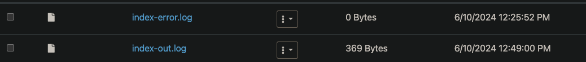
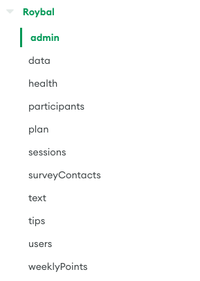

How to Manage Roybal
This is going to be a long document so it'll be split up into chapters to make jumping to certain parts easy and simple
Table of Contents
| Chapters | Links |
|---|---|
| 1. Installation Guides | Installation Guides |
| 2. Where to Find Everything | Where to Find Everything |
| 3. Running The Program | Running The Program |
| 4. Database Management | Database Management |
| 5. Misc Info | Misc Info |
1. Installation Guides
Local Installation
On your local computer, make sure you have the following things installed on your side:
- Bun:
- Bun is a Javascript runtime environment, its essentially a better version than Node.js if you're familiar with it
- You can install Bun through this link
- To run a javascript file, type in your terminal / command prompt the following:
bun index.js
- Git:
- Visit the repo where the site is held and clone the repo to your computer
- MongoDB Compass:
- You could use the web browser too if that works out for you, I prefer the application itself
- From this Link you can access the collections (tables of data) through clicking on "Browse Collections".
- If you chose to use the application Compass, use the correct connection string
- If anything looks incorrect, you'll be tasked with fixing it. Usually someone will bring it up to you first. If you need any help figuring out how to fix something then let me know
Cluster Installation
Next lets check out what you need installed on your home page in the Discovery Cluster:
- Node
- To install node on the cluster we're gonna need some interesting workarounds since they don't provide it naturally. If you want any assistance going through these steps feel free to let me know
- Visit the git repo for NVM (Node Version Manager) and copy the installation line
- Should look like this
curl -o- https://raw.githubusercontent.com/nvm-sh/nvm/v0.39.7/install.sh | bash
- Should look like this
- Log in to the cluster and run this install script in your home directory
- Run
source ~/.bashrcto reset your terminal - Type
nvm install 16, thennvm use 16 - If it switches to node version 16, then you have succeeded!
- Reminder, every time you log to the cluster to do something with the site, ALWAYS RUN
nvm use 16
- Visit the git repo for NVM (Node Version Manager) and copy the installation line
- PM2
- Once you have node installed on the cluster, we're going to need to install the package that automatically runs the server for us on the cluster.
- While you're in Node Version 16 ( type in
npm install pm2) - When you install pm2, go to your home directory and enable the checkbox that says "Show Dotfiles"

- Find the .pm2 directory
- Enter the logs directory
- It may be empty right now, but when you use it, you'll see two files. The out file is where all of the print statements and console logging end up. The error file is where any application error ends up. Its good to know where these are for debugging purposes.
- 
- To install node on the cluster we're gonna need some interesting workarounds since they don't provide it naturally. If you want any assistance going through these steps feel free to let me know
2. Where to Find Everything
Code
The code is currently on github, clone the repo and install all the dependencies you need from Node. In the cluster, the code is currently in the repo path of /work/cnelab/roybal/roybal-website/code
Whenever you push a new change onto the website, you are refreshing the instance of the code being ran on the Vercel website hosting platform. Vercel is what we are using to host the platform in a viewable state, the cluster is being used to automate the timely procedures, such as data collection and reminder messages.
As is practice, always remember to communicate when there is a new push to the codebase so we can make sure to pull the new changes to our own local.
The database being used is MongoDB, a free cloud service database that the platform connects to send and retrieve information. You should have access to the database. You can connect either through the provided link : Database Link or through connecting through the MongoDB Compass application using the connection string. I prefer the app just because its easier to see and make quick edits as needed, but you're free to use whichever you're most comfy with
3. Running The Program
Something VERY important to bring up is that even though the code you share is all synced up through git, the code in the cluster is not synced up. If you have a new change that DOES NOT AFFECTS THE AUTOMATED JOBS, then there is no need to keep them in sync. If you introduce a change to those automated Cron jobs, then you must change the code that is within the cluster and run pm2 restart index. This will restart the running application and reapply those new changes you've added.
All of the work you need to do if it comes to bug fixing should be stuff you can do on your local. You will very rarely if ever need to update anything with PM2. Just in case though, its good to be prepared
Most bug fixes will either be issues on the front end - back end information sending, or something in the database itself.
Local
-
I strongly recommend getting familiar with the index.js code file because that is the most intensive part of the website. It is where all the web routes are stored, where all the cron automated tasks occur, and where all the database processing occurs
-
Most work on the local involves changing front-end code or changing anything in the index.js file, which is our server component to the website. Its the backend magic where everything happens.
-
Sometimes there might be an issue where the data collection does not happen or a text reminder failed to send. What you can do in your local is this:
- Add one of the following lines to the END of the index.js file
await fetchAndProcessData()for data collectionawait processPlans()for plan and reminder processingawait processPoints()for point calculations (usually follows the one or both of the previous two)
- Once one or all of these lines are added, save the file and in your terminal run the command:
bun index.js. This will execute these functions and update the database results. - Once you are done, remove those lines from your code. We do not want these lines in the codebase, these are simply bug fix solutions
- Add one of the following lines to the END of the index.js file
-
If you have any more questions or need me to write more into this portion, feel free to let me know
4. Database Management
The database is where all the fun and pain begins! Once you log in and click on "browse collections", you will see the Roybal database. The database is now serving two functions, and can continue to serve more as new studies get added in. For now lets focus on the Roybal specific collections
In Mongo, a collection is essentially a table. I will be using Mongo terminology from this point onward.
Here are the collections that are currently in the database as of June 10th 2024 
Our main priorities are : - admin - stores the log in information for the website admin side. The correct log in for the Roybal admin site is the second data entry
-
data - stores the daily data collection from the Fitbit API. This is the raw data we are getting from Fitbit and should not be touched unless there is a bug, let me know when this happens.
-
health - currently empty, don't worry about it
-
participants - holds participant information for data collection purposes. Sometimes a new participant may have an incorrect number, make sure everyone has their own unique number and that it increments correctly. This number is used in 2 other places too so ensure there is consistency between numbers and ID's
-
plan - holds information on planned call days, planned activities, and activities that were done. This is used for point calculation and to update the calendar on a participants site. We link a participants ID and their contact information through their "number". Ensure consistency between number and ID and contact identifier
-
sessions - stores website information, don't worry about it
-
users - stores general purpose information about a user and their log in information. Make sure there is consistency between numbers and ID's
-
weeklyPoints - stores each users weekly points to update their line graph
Ensure there is consistency within the database, collaborate with each other and refer to me with any complications
5. Misc Info
I can't actually think of anything but thanks for reading good luck out there soldiers o7. I'm always here to consult with so have no fear.